Most phenotypes, from organism to cell, emerge from complex interactions of biological elements. Reductionist approaches to the elucidation of biological processes have gained immense popularity due to the relative simplicity and clear nature of such research workflows, focusing on a single molecule or a few of them at a time. However, in order to understand life from its simplest to its most complex forms, we need to delve into the world of networks.
Network theory has long been studied because of the many fields it can be applied to. The majority of complex systems can be modeled or explained by networks with, more or less, the same architectural features, highlighting the universality of such systems and the laws they are governed by. Despite disparities in the details that characterize each network, the abstract nature of network theory and analyses allow for the extraction of significant information that can help with comprehending critical constituents of a network’s organization, function and robustness, and can have major impacts on the fields of interest and their respective advancements (Barabási and Oltvai 2004).
The following protein network analysis is performed on protein-protein interaction (PPI) data that were derived from two-hybrid experiments. These data constitute part of a differential epistasis mapping paper published by Bandyopadhyay et. al. in 2010 (Bandyopadhyay et al. 2010). Pertaining to comparison of genetic networks across conditions, this study reveals differences in interactions of DNA damage response genes with and without cellular exposure to methane methylsulfonate or MMS, a DNA-damaging agent.
Two-hybrid experiments are a set of molecular biology techniques that aim to study protein-protein interactions and allow researchers to determine if two proteins can physically interact with each other in a living cell. The most common type of two-hybrid system is the yeast two-hybrid (Y2H) system, although variations exist for use in other organisms.
The process consists of a bait protein of interest that is fused to a DNA-binding domain (DBD) and a prey, which is another protein of interest, fused to an activation domain (AD). The system’s function relies on the reconstitution of a transcription factor when the two proteins of interest interact inside the living cell. If such interaction does occur after the cellular introduction of the bait and prey proteins, the functional transcription factor will bind to the promoter of a reporter gene. Through this process, protein-protein interactions can be detected in vivo and lead to advancements in the study of such complex networks that underlie cellular processes (Suter, Kittanakom, and Stagljar 2008).
This brief report is part of a personal project exploring the world of complex systems, network biology and the statistic measures that describe their properties and behavior. The aim of this project is to better understand biological interactions and network theory, while getting familiar with using Quarto publishing system and the appropriate R libraries for graph visualization, as well as the calculation of a few selected network metrics, including node degree and degree distribution, betweenness centrality, transitivity, modularity and community detection.
2 Results
2.1 Graph Visualization
A network graph is created using only the unique nodes of the protein network and the appropriate edges between them. In this case, the generated graph is undirected, meaning its edges do not point to a defined direction, from or to a specific node, in each path of the network.
# Read data from txt filedata <-read.table("Bandyopadhyay2010.txt", header = T)# Isolate only unique proteins of datasetunique_nodes <-unique(c(data$BAIT_OFFICIAL_SYMBOL, data$PREY_OFFICIAL_SYMBOL))# Create edges by binding together columns of initial datasetedges <-cbind(data$BAIT_OFFICIAL_SYMBOL, data$PREY_OFFICIAL_SYMBOL)# Create graph objectgraph <-graph_from_data_frame(edges, directed = F)# Add label attribute to graph vertices for protein namesV(graph)$label <- unique_nodes# Plot graph with node size according to node degreesggraph(graph, layout ="fr") +geom_edge_link(alpha =0.25) +geom_node_point(aes(size =degree(graph)), shape =21, fill ="#7ea695", color ="black") +theme_void() +ggtitle("Protein-Protein Interaction Network") +theme(plot.title =element_text(hjust =0.5, margin =margin(t =20)),plot.title.position ="plot",plot.margin =margin(t =30, r =10, b =10, l =10))+labs(size ="Node Degree")
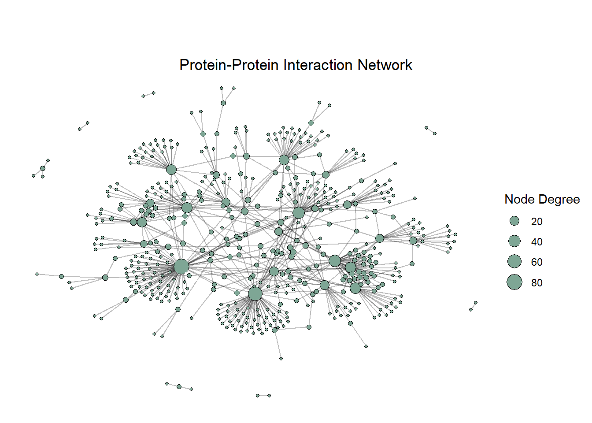
Figure 1: Graph of protein-protein interaction network with node size being proportional to node degrees.
Plotting the graph as it is leads to an output that has too much information to be interpreted and, thus, further analysis is needed in order to get to meaningful conclusions. It does, however, convey a few propensities characteristic of biological networks, such as the high degree of clustering, with the obvious existence of closely linked groups in the system around central nodes, so-called “hubs”. Also, the graph indicates the degree of different nodes, with a few nodes having a great number of links and forming big groups and most of the vertices being connected to little to no other nodes, hinting to the scale-free nature of the network. This is a tendency especially prominent in PPI and protein domain networks that denotes the intertwined modularity of such systems; proteins mostly work in functional and structural groups that cooperate to give rise to cellular phenotypes (Barabási and Oltvai 2004).
2.2 Node Degree (k)
In the context of network theory and graph analysis, node degree refers to the number of edges or direct connections to other vertices that are incident to a specific node in the graph (Opsahl, Agneessens, and Skvoretz 2010). High-degree nodes, often referred to as “hubs”, are typically crucial for the network’s structure and function and they often represent key proteins or genes in biological networks. On the contrary, low-degree nodes might pertain to more specialized or peripheral components in the system, since they have less interactions with the rest of the vertices. Understanding the information that is denoted by node degree significantly helps in analyzing the importance and influence of specific nodes in the network, elucidating the overall network topology and even identifying critical points for potential intervention (Pržulj, Corneil, and Jurisica 2004).
2.2.1 Degree distribution (P(k))
Code
# Calculate node degrees of graphnode_degrees <-degree(graph)# Create frequency table of node degreesdegree_count <-table(node_degrees)# Calculate degree distribution of graph nodesdeg_dist <- degree_count /vcount(graph)# Turn into dataframedeg_df <-data.frame(Degree =as.numeric(names(deg_dist)), Frequency =as.numeric(deg_dist))# Degree distribution barplotggplot(deg_df, aes(x = Degree, y = Frequency)) +geom_bar(stat ="identity", fill ="#7ea695",color ="black") +labs(title ="Degree Distribution (P(k))", x ="Degree (k)", y ="Frequency") +theme_minimal() +theme(plot.title =element_text(hjust =0.5, margin =margin(t=20)))
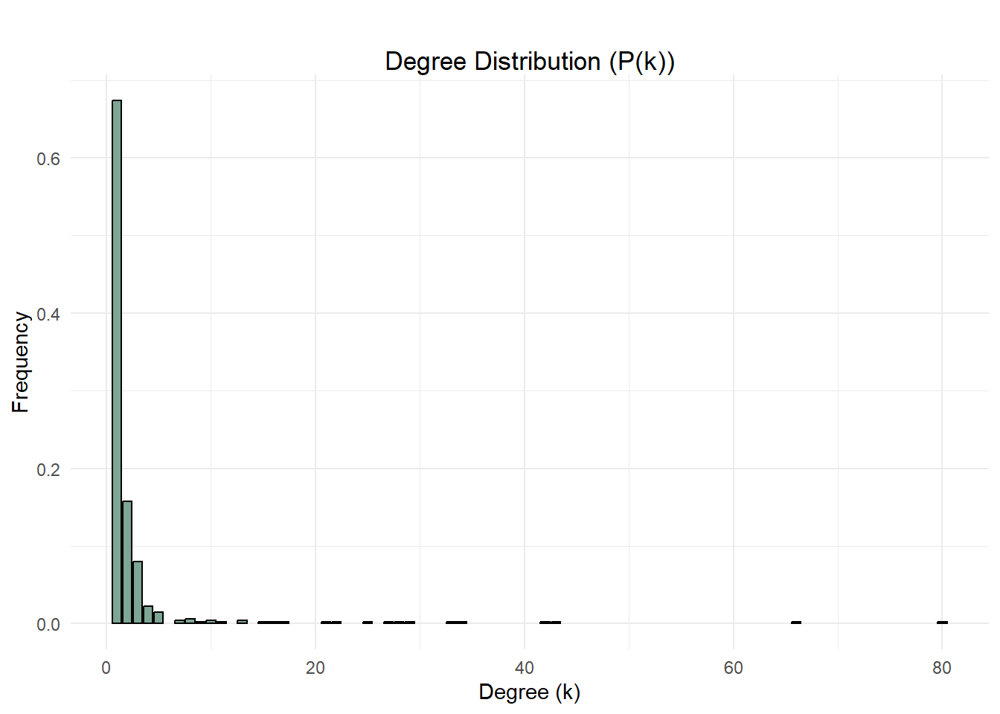
Figure 2: Barplot of degree distribution of nodes in PPI network.
Degree distribution (P(k)) is a network property that gives the probability for a randomly chosen node to have k links or, in other words, a degree equal to k. It is defined as follows:
where the numerator represents the number of nodes in the graph that have degree equal to {\displaystyle k} and the denominator {\displaystyle n} is the total number of nodes in the network.
Degree distribution conveys information about how the system is structured and allows for distinguishing between different network classes. Degree distribution of random networks tends to follow the Poisson distribution, with most of the nodes having the same amount of edges or links, a value that is closer to the average {\displaystyle <k>}. On the contrary, real complex systems, including PPI networks, showcase a highly asymmetric degree distribution that follows Power law and has a right skewness, which is obvious in Figure 2. It clearly denotes that the vast majority of the system’s nodes have a low degree, close or equal to 1, while a few vertices constitute hubs with extraordinarily high values of degrees. This is a characteristic attribute of scale-free networks, which mostly describe complex systems of the real world. Briefly, this property indicates the absence of a typical element or node in the network that could describe all other nodes, which could exist in random networks, where most node degrees approximate the average degree, but not in real networks (Barabási and Oltvai 2004).
Node degree and degree distribution have significant consequences for the network’s function and robustness. Generally, robustness is a property that pertains to the system’s capacity to react to changes in its environment or internal structure, while continuing to behave in a relatively typical manner. As its immunology counterpart of homeostasis, robustness is critical to the viability of the network, especially since most complex systems in the real world interact with highly variable and dynamic environments (Albert, Jeong, and Barabási 2000).
There is a strong relationship between the hub status of a node and its role in maintaining the network’s connectivity and viability, especially when it comes to topological robustness. Generally, scale-free networks with long tail degree distributions are resilient to random removal of nodes, a phenomenon known as “failure”, but they are vulnerable to the removal of hub vertices, which is known as “attack”. Thus, this type of networks are robust against accidental failures, since most of their components are low degree nodes, they do, however, rely on hubs for their structure and flow of information. As a result, the attack vulnerability of such networks can potentially affect both dynamical and functional robustness, besides the obviously afflicted topological one (Liu et al. 2017).
2.3 Clustering and Communities
2.3.1 Community Detection
For better visualization of protein-protein interactions, the vertices that pertain to unique proteins of the given network can be grouped into clusters that constitute protein communities; that is, groups of proteins that seem to interact with each other in a greater degree than they do with other proteins of the network. Here, community detection was performed using the Louvain clustering algorithm, a popular modularity-based algorithm for the identification of communities in large networks. This method is widely preferred due to its agglomerative nature, since it is based on a multi-scale modularity optimization process. However, it must be pointed out that the Louvain algorithm does have a resolution limit that stems from its size-dependence; the larger the system, the higher the probability for detection of larger clusters/communities (Blondel et al. 2008).
Code
# Apply Louvain clustering algorithm to graph for community detectionnet_communities <-cluster_louvain(graph)# Extract community membership vector from community detection result object# Indicates which community each node in the network belongs tomembership <-membership(net_communities)# Convert graph object into tbl_graph object for better visualization of graphtbl_graph <-as_tbl_graph(graph)# Add community attribute to tbl_graph vertices to match each node to its communityV(tbl_graph)$community <- membership# Plot graph with node colors according to community membership of each node# using the Fruchterman-Reingold layout ggraph(tbl_graph, layout ="fr") +geom_edge_link(alpha =0.25) +geom_node_point(aes(fill =as.factor(community)), size =2,shape =21, stroke =0.08, border ="grey") +theme_void() +labs(title ="PPI Network Communities",subtitle ="Louvain Clustering",fill ="Community") +theme(plot.title =element_text(hjust =0.5),plot.subtitle =element_text(hjust =0.5, vjust =-1),legend.key.height =unit(0.1, "line"))+guides(fill =guide_legend(ncol =2))
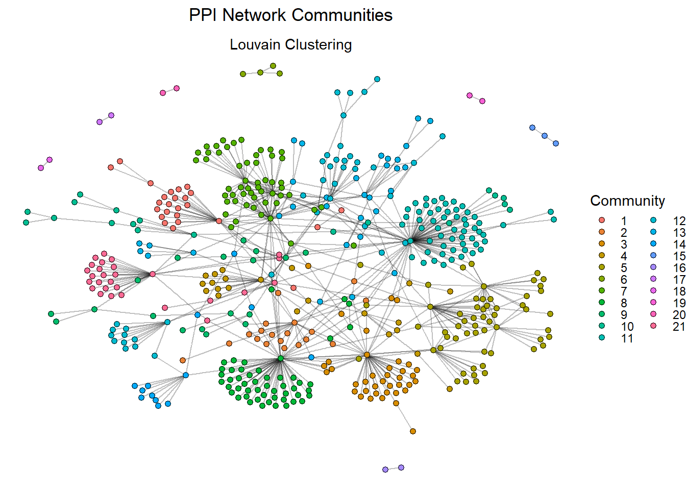
Figure 3: Graph of PPI network after applying the Louvain clustering algorithm for community detection. Communities are discerned by color.
Code
# Assign membership vector to variable com_member_netcom_member_net <- membership# Identify all unique communities in the networkunique_com_net <-unique(membership)# Create placeholder list variablecommunity_sizes_net <-list()# Iterate through unique communities of network to count each community's nodesfor (i in1:length(unique_com_net)) { nodes_in_com <-which(com_member_net == unique_com_net[i]) community_sizes_net[[i]] <-length(nodes_in_com)}# Create dataframe of community sizescom_size_net_df <-data.frame(Community_ID =as.factor(unique_com_net),Size =as.numeric(unlist(community_sizes_net)))# Barplot of community sizesggplot(com_size_net_df, aes(x= Community_ID, y= Size, fill= Size)) +geom_bar(stat ="identity")+labs(title ="Community Sizes", x ="Community", y ="Number Of Nodes")+theme_minimal() +theme(plot.title.position="plot",plot.title =element_text(hjust =0.5))
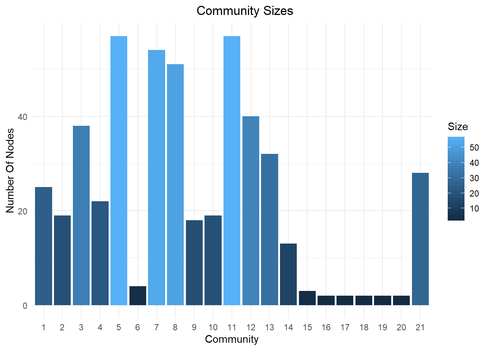
Figure 4: Barplot of community sizes in PPI network.
After applying the Louvain clustering algorithm to the network for community detection, it is clear that there are 21 communities, each one indicated by a different color in Figure 3. Figure 4 shows the sizes of the communities detected in the network, with over half of the communities having more than 20 nodes as members, and 4 of them having 50 or more members.
2.3.2 Modularity
Modularity measures the extend to which the network is organized into communities. The modularity of a given set of communities within a network is defined as follows:
Q = \frac{|E_{in}| - \langle E_{in} \rangle}{|E|}
where |Ein| is the number of edges within a community that do not cross boundaries between communities, \langle Ein \rangle is the expected number of within-community edges if the topology were completely random and |E| is the total number of edges. The value of modularity for a specific network ranges from -1 to 1, with positive values denoting that the number of edges within communities are more than the expected number.
Code
# Modularity calculates the modularity of a graph with respect to the given membership vectormodularity_score <-modularity(graph, membership, resolution =1)rounded_modularity <-round(modularity_score, 2)cat("Q =", rounded_modularity)
Q = 0.75
The network in question has a modularity score of 0.75, which indicates a relatively strong community structure, with well-clustered nodes, many edges within communities and few edges between discrete communities. In biological terms, modularity refers to groups of interlinked molecules, such as proteins, that cooperate to achieve a specific function. As expected, most complex biological systems, like PPI networks, usually brim with modular functionality and/or structure, a property that is correlated with high network robustness (Newman 2006).
2.3.3 Betweenness Centrality
Betweenness centrality denotes the number of times a node acts as a bridge along the shortest path between two other nodes. The betweenness centrality of a node {\displaystyle v} is defined as follows:
where {\displaystyle \sigma _{st}} is the number of shortest paths from node {\displaystyle s} to node {\displaystyle t} and {\displaystyle \sigma _{st}(v)} is the number of shortest paths from node {\displaystyle s} to node {\displaystyle t} that go through node {\displaystyle v} (without node {\displaystyle v} being an ending or starting point).
Code
# Calculate betweenness centrality of each node in graphbetweenness_values <-betweenness(graph, normalized = T)# Add attribute Betweenness to tbl_graph verticesV(tbl_graph)$Betweenness <- betweenness_values# Create vector of only non zero betweenness centrality valuesnon_zero_betweeness <- betweenness_values[betweenness_values >0]# Create vector of only nodes with non-zero betweenness centrality valuesnon_zero_names <-V(tbl_graph)$name[(V(tbl_graph)$Betweenness) >0]# Create dataframe of nodes and non-zero betweenness centrality valuesbetweenness_df <-data.frame(Proteins =as.factor(non_zero_names),Betweenness =as.numeric(non_zero_betweeness))# Betweenness centrality barplotggplot(betweenness_df, aes(x =Proteins, y = Betweenness))+geom_bar(stat ="identity")+theme_minimal()+labs(title ="Betweenness Centrality of Proteins",x ="Nodes",y ="Betweenness Centrality") +theme(plot.title =element_text(hjust=0.5),axis.text.x =element_blank())
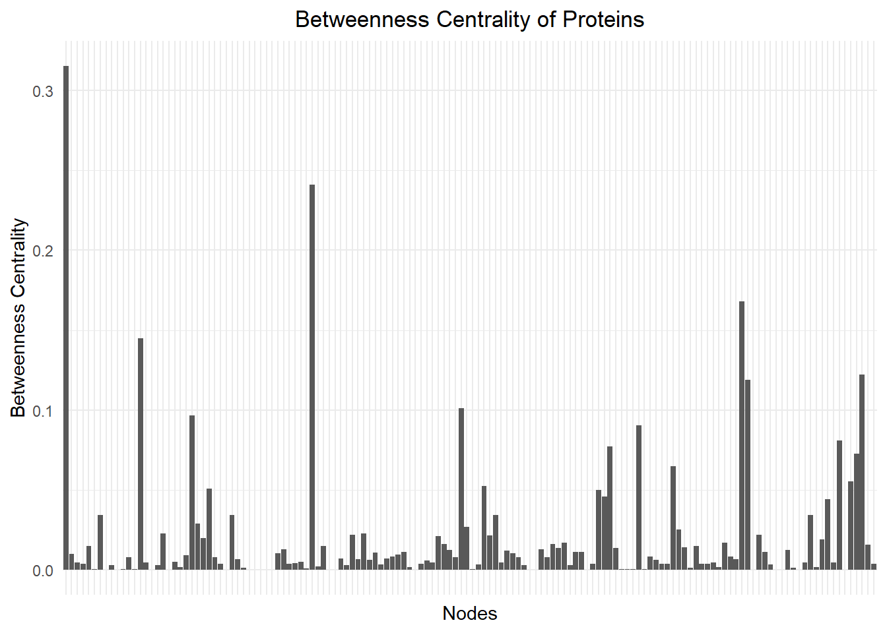
Figure 5: Barplot of betweenness centrality values of nodes in PPI network.
Code
# Create vector of only relatively high betweenness centrality values# Betweenness centrality > 0.1high_betweenness <- betweenness_values[betweenness_values >0.1]# Create vector of nodes with betweenness centrality > 0.1high_betweenness_nodes <-V(tbl_graph)$name[(V(tbl_graph)$Betweenness) >0.1]# Create dataframe of nodes and betweenness centrality values [> 0.1]high_betweenness_df <-data.frame(Proteins =as.factor(high_betweenness_nodes),Betweenness =as.numeric(high_betweenness))# Barplot of nodes with betweenness centrality > 0.1# Central nodes for information flow in networkggplot(high_betweenness_df, aes(x = Proteins, y = Betweenness))+geom_bar(stat ="identity", fill ="#7ea695", color ="black", width=0.8)+theme_minimal()+labs(title ="Proteins with Betweenness Centrality > 0.1",x ="Nodes",y ="Betweenness Centrality") +theme(plot.title =element_text(hjust=0.5),axis.text.x =element_text(angle=90))
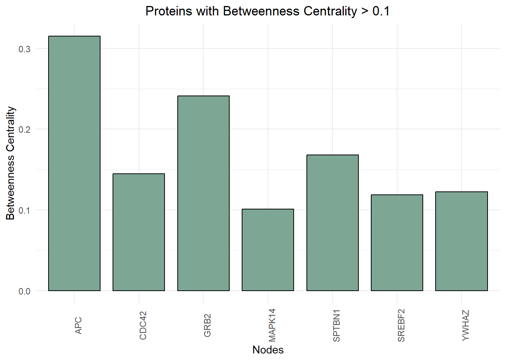
Figure 6: Barplot of nodes with betweenness centrality values of >0.1.
As shown in Figure 5, most of the network’s nodes have low betweenness centrality values, with only a few exceeding 0.1. The proteins with relatively high betweenness centrality values (>0.1) are plotted in Figure 6, with APC or adenomatous polyposis coli, a Wnt signalling pathway regulator, reaching over 0.3. High betweenness centrality indicates that a node significantly influences the flow of information within a network and is crucial for maintaining the network’s functionality. Usually, such proteins are evolutionarily conserved and constitute some of the oldest vertices in the PPI system, as is APC, which exhibits an extreme degree of conservation across taxa with most mutations having adverse effects for cellular processes, especially in the epithelium (Abbott and Näthke 2023).
2.3.4 Transitivity
Transitivity, also known as global clustering coefficient, quantifies the propensity of a group of nodes to cluster together in a network. It is defined as the ratio of the number of closed triplets or triangles, to the number of all triplets, closed and open, of the network. Global clustering coefficient provides an average measure of the clustering in a network and is defined as follows:
where the denominator is the total number of possible node pairs within node {\displaystyle i} ’s neighborhood and the numerator is the number of actually connected node pairs among them.
Code
# Calculate transitivity values of nodes in networktransitivity_values <-transitivity(graph, type ="local")# Add transitivity values as attribute of tbl_graph verticesV(tbl_graph)$Transitivity <- transitivity_values# Create vector of only non-zero transitivity valuesnon_zero_trans <- transitivity_values[transitivity_values >0]# Create vector of nodes with non-zero transitivity valuesnon_zero_trans_nodes <-V(tbl_graph)$name[(V(tbl_graph)$Transitivity) >0]# Create dataframe of nodes and non-zero transitivity valuestransitivity_df <-data.frame(Proteins =as.factor(non_zero_trans_nodes),Transitivity =as.numeric(non_zero_trans))# Barplot of non-zero transitivity valuesggplot(transitivity_df, aes(x =Proteins, y = Transitivity))+geom_bar(stat ="identity", fill ="#495c51", width =0.8)+theme_minimal()+labs(title ="Transitivity Values of Proteins",x ="Nodes",y ="Transitivity") +theme(plot.title =element_text(hjust=0.5),axis.text.x =element_text(angle =90, vjust =0.5, hjust =1, size =7))
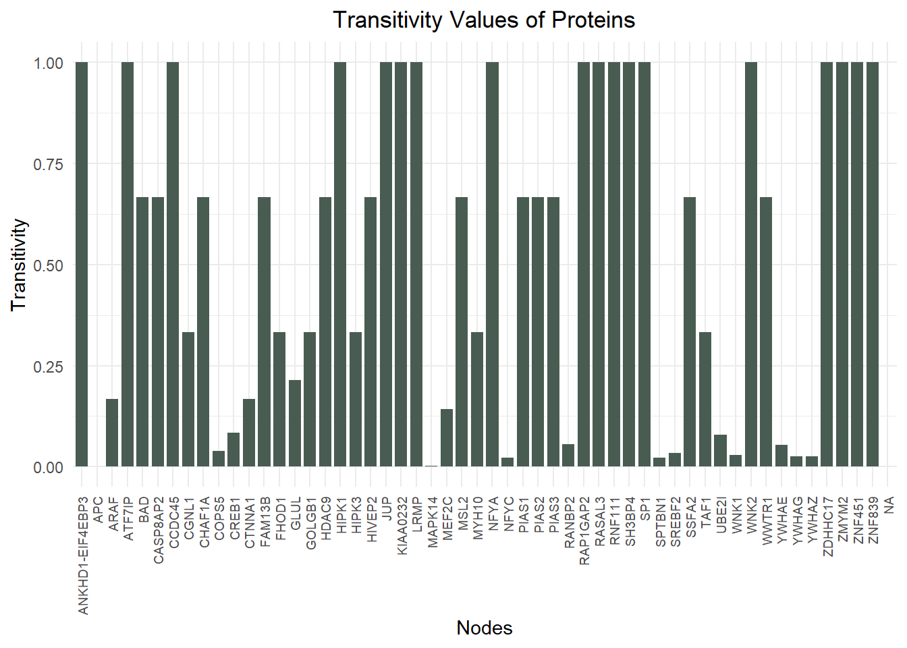
Figure 7: Barplot of transitivity values of nodes in PPI network.
Transitivity values range from 0 to 1, with {\displaystyle C_T} values close to 0 implying no closed triad for a given node, whereas {\displaystyle C_T} values close or equal to 1 denote vertices that are part of completely closed triads. Figure 7 shows that a small group of proteins in the network have low transitivity values, with most of the nodes having {\displaystyle C_T} values above 0.5.
Figure 7 shows that APC, the protein that has the highest betweenness centrality value of all other vertices in the network, exhibits the lowest possible value of transitivity. More specifically, APC has a transitivity value of about 0.00095, as shown in Table 1. This possibly constitutes a counter-intuitive combination for a node; having both high betweenness centrality and substantially low transitivity values. However, a closer look into the community’s structure and how the nodes are organized around APC will elucidate the two statistical measures and their meanings.
2.4 The Importance Of Hubs
Focusing on a community can be helpful when it comes to looking into possible important constituents of a network. The close examination of the interactions of proteins in a particular community can lead to the identification of protein hubs, proteins that interact with many others within the cell and often play a crucial role in the organization and regulation of PPI networks, being essential for the stability and functionality of cellular processes. Many hub proteins are evolutionarily conserved, indicating their essential role across different species (Vallabhajosyula et al. 2009).
Code
# Assign the community APC is a part of to a variable target_community <-V(tbl_graph)$community[V(tbl_graph)$name =="APC"]# Create vector with nodes that belong to the community APC belongs tonodes_in_community <-which(membership == target_community)# Create subgraph object of APC community nodes and turn it into tbl_graph objectsubgraph1 <-subgraph(graph, nodes_in_community)tbl_subgraph1 <-as_tbl_graph(subgraph1)# Add degree attribute for vertices in tbl_subgraph1V(tbl_subgraph1)$Degree <-degree(subgraph1)# APC Community plot with node size according to node degreeggraph(tbl_subgraph1, layout ="fr") +geom_edge_link(alpha =0.8, color ="darkgrey") +geom_node_point(aes(size =V(tbl_subgraph1)$Degree), shape =21, border="black",fill="#174e50", stroke =0.1) +geom_node_text(aes(label=name), vjust =1.5, hjust =1, size =2.3) +theme_void() +labs(title ="APC Community") +theme(plot.title =element_text(hjust =0.5),plot.margin =margin(t =40, r =40, b =40, l =40),legend.position ="none")
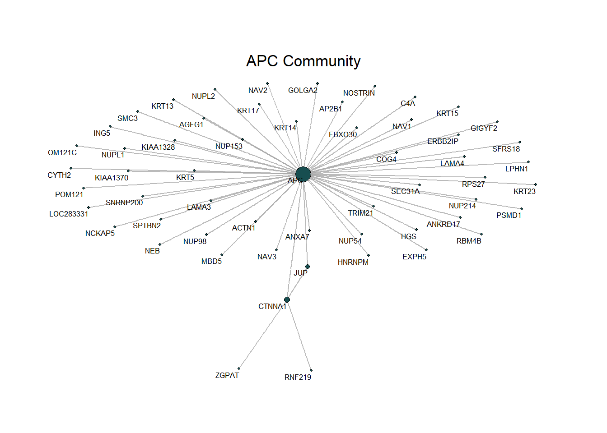
Figure 8: Graph of nodes belonging to the same community as APC. Node sizes are proportionate to node degrees.
Code
# Find neighbors of APC and assign them to vectorAPC_neighbors <-neighbors(subgraph1, V(subgraph1)$name =="APC")# Assign APC neighbors' names to vectorAPC_net <-c("APC", V(subgraph1)$name[APC_neighbors])# Create subgraph of APC neighbors and turn into tbl_graph objectAPC_net_graph <-subgraph(subgraph1, APC_net)tbl_APC <-as_tbl_graph(APC_net_graph)# APC neighbors plotggraph(tbl_APC, layout ="fr") +geom_edge_link(alpha =0.8, color ="darkgrey") +geom_node_point(aes(size =4), shape =21, border="black",fill="#174e50", stroke =0.1) +geom_node_text(aes(label=name), vjust =2, hjust =0.5, size =2.3) +theme_void() +labs(title ="APC Neighbors") +theme(plot.title =element_text(hjust =0.5),plot.margin =margin(t =40, r =40, b =40, l =40),legend.position ="none")
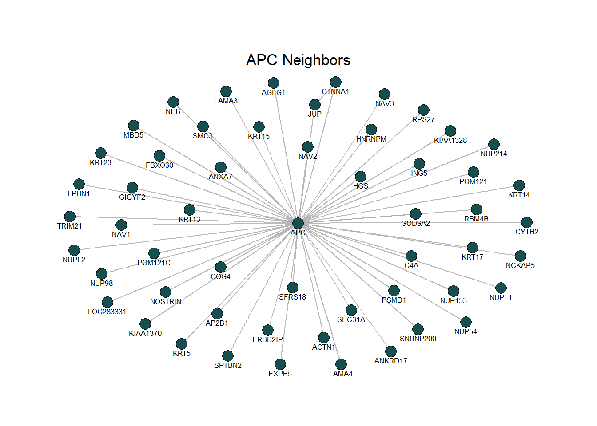
Figure 9: Graph of APC neighbors.
Figure 8 depicts the community of APC and its neighboring nodes. It is clear that APC is a central node and has numerous connections to the rest of the vertices in the community, which hints to the high degree and betweenness centrality of the protein in question. In order to clearly display what a low transitivity value can be translated to one needs to look into the neighboring nodes of APC, that is, nodes that are connected to the protein with a direct link. As shown in Figure 9, the neighbors of APC are hardly connected to each other, which indicates low degree of triad formation or local clustering in the community.
It is important to highlight the fact that the central position, high connectivity, node degree and betweenness centrality of APC constitute characteristic properties of hub nodes. In other words, APC, being one of the few central vertices of the system that has lots of connections, contributes to the increase of the network’s topological robustness and flow of information. This example demonstrates the fact that some highly connected hubs can have low transitivity values, linking otherwise not communicating nodes.
Code
# Assign the community ATF7IP is a part of to a variable target_com <-V(tbl_graph)$community[V(tbl_graph)$name =="ATF7IP"]# Create vector with nodes that belong to the community ATF7IP belongs tonodes_in_com <-which(membership == target_com)# Create subgraph object of ATF7IP community nodes and turn it into tbl_graph objectsubgraph2 <-subgraph(graph, nodes_in_com)tbl_subgraph2 <-as_tbl_graph(subgraph2)# Add degree attribute for vertices in tbl_subgraph2V(tbl_subgraph2)$Degree <-degree(subgraph2)# ATF7IP Community plot with node size according to node degreeggraph(tbl_subgraph2, layout ="fr") +geom_edge_link(alpha =0.8, color ="darkgrey") +geom_node_point(aes(size =V(tbl_subgraph2)$Degree), shape =21, border="black",fill="#174e50", stroke =0.1) +geom_node_text(aes(label=name), vjust =1.8, hjust =0.5, size =2.3) +theme_void() +labs(title ="ATF7IP Community") +theme(plot.title =element_text(hjust =0.5),plot.margin =margin(t =40, r =40, b =40, l =40),legend.position ="none")
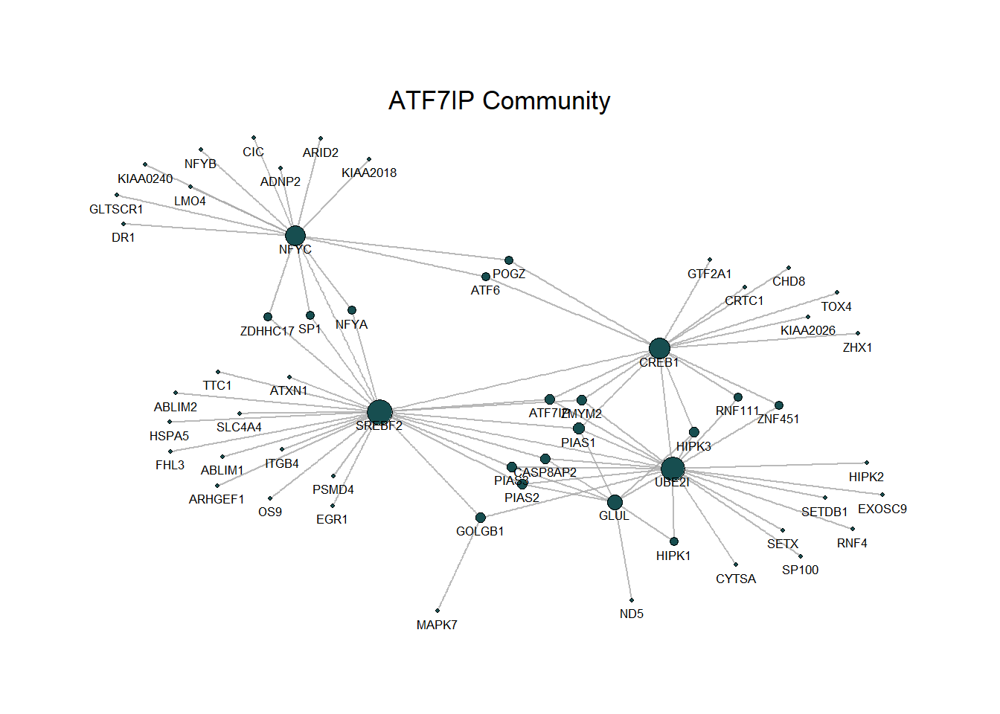
Figure 10: Graph of nodes belonging to the same community as ATF7IP. Node sizes are proportionate to node degrees.
Code
# Find neighbors of ATF7IP and assign them to vectorATF7IP_neighbors <-neighbors(subgraph2, V(subgraph2)$name =="ATF7IP")# Assign ATF7IP neighbors' names to vectorATF7IP_net <-c("ATF7IP", V(subgraph2)$name[ATF7IP_neighbors])# Create subgraph of ATF7IP neighbors and turn into tbl_graph objectATF7IP_net_graph <-subgraph(subgraph2, ATF7IP_net)tbl_ATF <-as_tbl_graph(ATF7IP_net_graph)# ATF7IP neighbors plotggraph(tbl_ATF, layout ="fr") +geom_edge_link(alpha =0.8, color ="darkgrey") +geom_node_point(aes(size =4), shape =21, border="black",fill="#174e50", stroke =0.1) +geom_node_text(aes(label=name), vjust =1.8, hjust =0.5, size =2.3) +theme_void() +labs(title ="ATF7IP Neighbors") +theme(plot.title =element_text(hjust =0.5),plot.margin =margin(t =40, r =40, b =40, l =40),legend.position ="none")
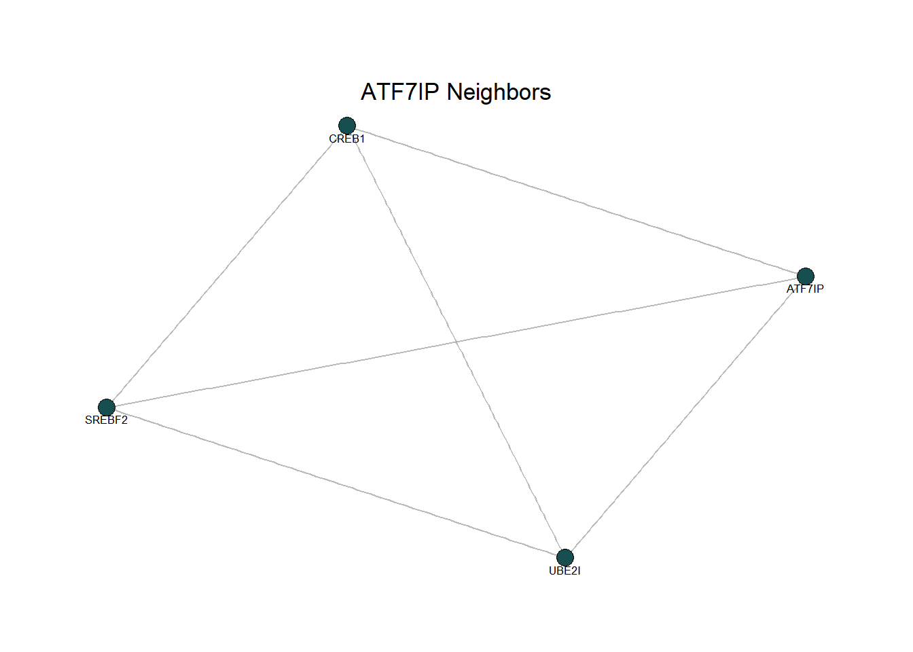
Figure 11: Graph of ATF7IP neighbors.
For comparison purposes, the same analysis was done for one of the proteins with a transitivity value equal to 1, ATF7IP. Figure 10 displays the community that ATF7IP is a member of, showcasing the relatively low node degree of the protein, as well as the vastly different structure of the community, conveying more complex relationships between nodes, when compared to Figure 8. The high transitivity value of ATF7IP is shown in Figure 11, where it is clear that all the possible triads that could be formed between ATF7IP’s neighboring vertices already exist in the small group.
3 Conclusion
Network Biology is an interdisciplinary field of research that can be of immense importance for the deeper understanding of biological systems, including protein-protein interaction networks. Network theory provides the tools for the study of such complex systems, using a variety of statistical measures, including node degree, betweenness centrality, transitivity and modularity to distinguish between different types of networks and their distinct behavior and evolution. These types of analyses can be a starting point for more detailed experimental studies to explore these interactions and their functional implications.
References
Abbott, James, and Inke S. Näthke. 2023. “The Adenomatous Polyposis Coli Protein 30 Years On.”Seminars in Cell & Developmental Biology 150-151 (December): 28–34. https://doi.org/10.1016/j.semcdb.2023.04.004.
Albert, Réka, Hawoong Jeong, and Albert-László Barabási. 2000. “Error and Attack Tolerance of Complex Networks.”Nature 406 (6794): 378–82. https://doi.org/10.1038/35019019.
Bandyopadhyay, Sourav, Monika Mehta, Dwight Kuo, Min-Kyung Sung, Ryan Chuang, Eric J. Jaehnig, Bernd Bodenmiller, et al. 2010. “Rewiring of Genetic Networks in Response to DNA Damage.”Science 330 (6009): 1385–89. https://doi.org/10.1126/science.1195618.
Barabási, Albert-László, and Zoltán N. Oltvai. 2004. “Network Biology: Understanding the Cell’s Functional Organization.”Nature Reviews Genetics 5 (2): 101–13. https://doi.org/10.1038/nrg1272.
Blondel, Vincent D, Jean-Loup Guillaume, Renaud Lambiotte, and Etienne Lefebvre. 2008. “Fast Unfolding of Communities in Large Networks.”Journal of Statistical Mechanics: Theory and Experiment 2008 (10): P10008. https://doi.org/10.1088/1742-5468/2008/10/p10008.
Liu, Jing, Mingxing Zhou, Shuai Wang, and Penghui Liu. 2017. “A Comparative Study of Network Robustness Measures.”Frontiers of Computer Science 11 (4): 568–84. https://doi.org/10.1007/s11704-016-6108-z.
Newman, M. E. J. 2006. “Modularity and Community Structure in Networks.”Proceedings of the National Academy of Sciences 103 (23): 8577–82. https://doi.org/10.1073/pnas.0601602103.
Opsahl, Tore, Filip Agneessens, and John Skvoretz. 2010. “Node Centrality in Weighted Networks: Generalizing Degree and Shortest Paths.”Social Networks 32 (3): 245–51. https://doi.org/10.1016/j.socnet.2010.03.006.
Suter, Bernhard, Saranya Kittanakom, and Igor Stagljar. 2008. “Two-Hybrid Technologies in Proteomics Research.”Current Opinion in Biotechnology 19 (4): 316–23. https://doi.org/10.1016/j.copbio.2008.06.005.
Vallabhajosyula, Ravishankar R., Deboki Chakravarti, Samina Lutfeali, Animesh Ray, and Alpan Raval. 2009. “Identifying Hubs in Protein Interaction Networks.” Edited by Diego Di Bernardo. PLoS ONE 4 (4): e5344. https://doi.org/10.1371/journal.pone.0005344.